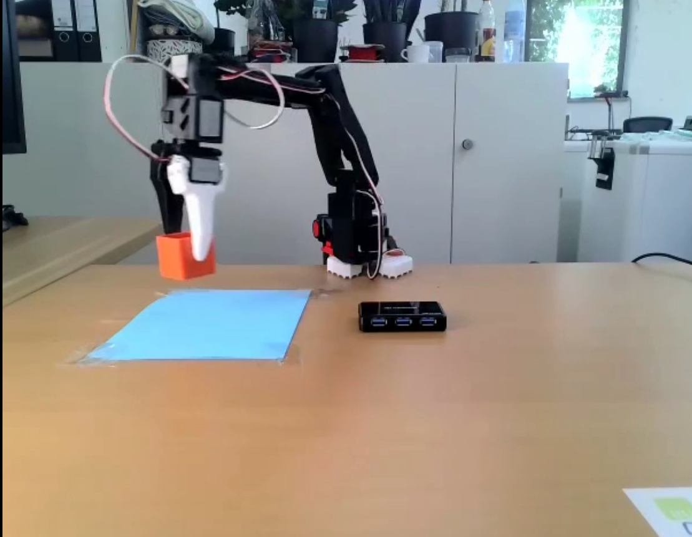

LeRobot: Visual Large Models for Pick & Place
Advanced AI-driven robotic manipulation using visual large language models for intelligent pick and place tasks
Overview
This project was developed during the Lerobot Global Hackathon for developing a pick and place task for the S0-101 robot using SMOLVLA. LeRobot is a modular, open-source robotic arm platform designed for research and rapid prototyping. The project covers the full process: assembly, calibration, and fine-tuning of the robot for advanced manipulation tasks.
Main Steps & Features
- Assembly: 3D-printed parts, modular design, and detailed joint-by-joint instructions for building the robot arm.
- Calibration: Ensures joint alignment for both leader and follower arms, critical for teleoperation and learning-based control.
- Fine-Tuning: Uses Hugging Face’s SmolVLA robotics foundation model, with instructions for dataset recording and model training.
- Evaluation: Tools for evaluating the fine-tuned model and teleoperation with the leader arm.
Visual Results
If the video does not play, download and open it with VLC or a modern browser.
Technologies Used
Project Impact
This project is a leap forward in making robots more intuitive and capable. By combining vision and language, LeRobot can adapt to new tasks and environments, making robotics more accessible and exciting for everyone from students to professionals.
GitHub Repository
Explore the complete implementation, documentation, and codebase on GitHub:
View on GitHub